Voor elke club een eigen film, met het eigen pand, het eigen team en de stem van de eigen clubmanager. Alle 23 clubs live vóór 1 januari, mooi op tijd voor uw campagne in januari.
Het voorbeeld voor alle 23 clubs: 90 seconden, in de huisstijl van MyLife, met de echte stem van de clubmanager.
Eén vaste opbouw, 23 keer anders ingevuld. Zo ziet dezelfde film eruit voor elke club van MyLife.
De club, het team en de clubmanager in beeld. Voor de clubpagina, de schermen in de club en de nieuwe leden van januari.
Zomer, open dag, het nieuwe seizoen. Eén campagne voor de hele keten, per club met de eigen naam en het eigen gezicht. Wil MyLife per regio iets anders, dan kan dat: in Breda na carnaval, in Rotterdam rond de marathon.
Productfilms, ledenverhalen, trainers werven en meer. Ideeën die we samen met MyLife verder uitwerken.
Drie voorbeelden. Voor de andere clubs zoeken we samen een eigen moment in de buurt.
Graag denken we hierover mee.
Alle prijzen zijn exclusief btw.
Laat weten welke twee clubs naast Breda als eerste mogen. Dan staan er half december drie clubs live, en heeft op 1 januari 2027 elke club zijn eigen film, klaar voor uw campagne in januari.